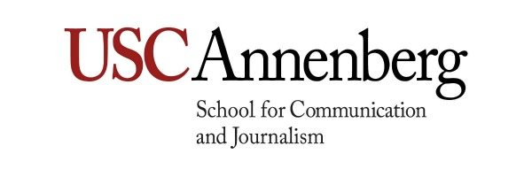

The USC Annenberg School for Communication and Journalism comprises a School of Communication and a School of Journalism at the University of Southern California (USC). It is led by Dean Ernest J. Wilson III, Ph.D.
USC Annenberg was established in 1971 through the support of Ambassador Walter H. Annenberg. The USC Department of Communication Arts and Sciences and the School of Journalism became part of USC Annenberg in 1994. The Annenberg School offers a range of academic and professional degrees. The School of Communication offers a Ph.D. program.
Ambassador Annenberg’s mission statement remains the central focus of the Annenberg School:
Every human advancement or reversal can be understood through communication. The right to free communication carries with it the responsibility to respect the dignity of others, and this must be recognized as irreversible. Educating students to communicate this message effectively and to be of service to all people is the enduring mission of this school.
During Dean Geoffrey Cowan's leadership (1996–2007), the endowment rose from $7.5 million to $218 million.
In 2003, leading internet sociologist Manuel Castells left UC Berkeley to join the USC Annenberg faculty.
USC Annenberg has become a center for inquiry and dialogue among scholars and professionals in communication, journalism, public policy, media, and education. Multidisciplinary and international in scope, focused and practical in application, USC Annenberg scholars, both students and faculty, are defining communication and journalism for the 21st century and beyond.